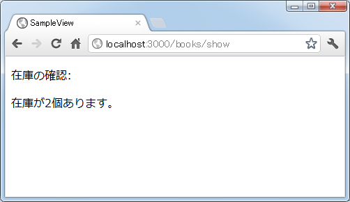

テンプレートの中でRubyコードを使う
ここまでの例ではテンプレートの中でHTML文だけを記述してきましたが、テンプレートの中ではRubyコードを記述することも可能です。複雑な処理はアクションの中で行うのが基本ですが、テンプレートの中でも簡単な計算をしたり繰り返し処理を記述できると便利です。ここではテンプレートの中でRubyコードを記述する方法を解説します。
1.<% ～ %>と<%= ～ %>
2.繰り返し処理
3.条件分岐
4.改行を取り除いて出力
<% ～ %>と<%= ～ %>
今までのサンプルではテンプレートにHTML文だけを記述していました。
<p> 本の値段は2,500円です。 </p>
テンプレートの中にRubyコードを記述するには<% ～ %>または<%= ～ %>の中にRubyコードを記述します。次の例を見て下さい。
<% price = 2500 * 1.05 %> <p> 本の値段は<%= price %>円です。 </p>
テンプレートの中で<% ～ %>または<%= ～ %>の中に記述されたものはRubyのコードとして実行されます。その為、「<% price = 2500 * 1.05 %>」は「price = 2500 * 1.05」という文字列が記述されているのではなく、変数priceに2500 * 1.05を計算した結果が格納されます。
では<% ～ %>または<%= ～ %>の違いは何でしょうか。どちらも中に記述されたRubyコードが実行されるのですが、<%= ～ %>の方は実行された結果を評価し、文字列として出力します。「本の値段は<%= price %>円です。」は「<%= price %>」の部分が変数priceに格納された値が評価されて「2625.0」という文字列になりますので、最終的に「本の値段は2625.0円です。」と出力されることになります。
このように<% ～ %>の方は結果を出力しない計算や繰り返し処理などのRubyコードを記述するのに使用し、<%= ～ %>の方は文字列を出力するような処理で使用します。
では実際に試してみます。「books」コントロールの「show」アクションから呼び出されるテンプレートとして「app/views/books/show.html.erb」ファイルを作成し、次のように記述しました。
<% price = 2500 * 1.05 %> <p> 本の値段は<%= price %>円です。 </p>
「books」コントローラには次のように「show」アクションを作成してあります。
class BooksController < ApplicationController def show end end
ルーティングの設定として「config/routes.rb」ファイルに次のように記述しました。
SampleView::Application.routes.draw do get "books/show" end
ではアプリケーションを起動し「books」コントロールの「show」アクションを呼び出してみます。すると次のように結果がブラウザに表示されました。
このようにRubyコードによって本の値段の計算が行われ、計算した結果を含む文字列が出力されました。
繰り返し処理
データベースから取得したデータの配列をアクションから受け取り、テンプレートの中で配列に含まれる要素の数だけ出力するといった処理はよく出てきます。色々な方法はありますが例えばeachメソッドを使ってRubyで記述すると次のようになります。
オブジェクト.each do |変数| 実行する処理 end
テンプレートの中でも同じように繰り返し処理を記述することができます。例えば次のように記述することができます。
<% writers = ['浅田次郎', '道尾秀介', '重松清'] %> <p> <% writers.each do |writer| %> <%= writer %>さん。 <% end %> </p>
まず配列を作成した上で、配列に含まれる要素を順に出力しています。
では実際に試してみます。先程作成した「app/views/books/show.html.erb」ファイルに次のように記述しました。
<p> 好きな作家の方は </p> <% writers = ['浅田次郎', '道尾秀介', '重松清'] %> <p> <% writers.each do |writer| %> <%= writer %>さん。 <% end %> </p> <p> です。 </p>
アクションやルーティングについては変更していません。ではアプリケーションを起動し、「books」コントロールの「show」アクションを呼び出してみます。すると次のように結果がブラウザに表示されました。
配列に格納された要素の数だけ繰り返しが行われ、順に文字列として出力されていることが確認できます。
条件分岐
条件に応じて処理を変更したい場合にif文が使用されます。Rubyで記述すると次のようになります。
if 条件式 then 実行する処理 else 実行する処理 end
テンプレートの中でも同じように繰り返し処理を記述することができます。例えば次のように記述することができます。
<% zaiko = 2 %> <p> <% if zaiko == 0 then %> 在庫がありません。 <% else %> 在庫が<%= zaiko %>個あります。 <% end %> </p>
変数に格納されている値によって出力する文字列を変えています。
では実際に試してみます。先程作成した「app/views/books/show.html.erb」ファイルに次のように記述しました。
<p> 在庫の確認: </p> <% zaiko = 2 %> <p> <% if zaiko == 0 then %> 在庫がありません。 <% else %> 在庫が<%= zaiko %>個あります。 <% end %> </p>
アクションやルーティングについては変更していません。ではアプリケーションを起動し、「books」コントロールの「show」アクションを呼び出してみます。すると次のように結果がブラウザに表示されました。

在庫が格納された変数の値で条件分岐を行い、在庫がなければ「在庫がありません」と表示し、在庫があれば在庫の個数を表示します。今回は変数に2が格納されていましたので、在庫の数が表示されています。
今回は繰り返しと条件分岐について1つずつ試してみましたが、他にもwhile文やtimesメソッドなど任意のRubyコードを記述することができます。
改行を取り除いて出力
テンプレートの中にRubyコードを記述するには<% ～ %>または<%= ～ %>を使ってきましたが、代わりに<% ～ -%>または<%= ～ -%>のように閉じるタグの方に「-」を付けると、閉じるタグの後で改行を行った場合でも出力される時は改行が取り除かれます。
次の例を見てください。同じように変数に格納された値を出力していますが、2番目の方は「-%>」の後の改行が取り除かれた状態で出力されます。
<% msg = '山田' %> <p> <%= msg %> さん </p> <p> <%= msg %>さん </p> <p> <%= msg -%> さん </p>
このテンプレートを呼び出してみると次のように結果がブラウザに表示されます。
微妙に異なっているのがお分かり頂けますでしょうか。ソースを確認してみると次のように出力されています。
<p> 山田 さん </p> <p> 山田さん </p> <p> 山田さん </p>
このように余計な改行が最後に付かないようにしたい場合には「-%>」のように「-」をつけて下さい。
( Written by Tatsuo Ikura )

著者 / TATSUO IKURA
初心者～中級者の方を対象としたプログラミング方法や開発環境の構築の解説を行うサイトの運営を行っています。